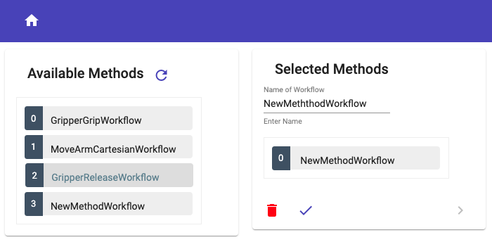

The documentation in this section is designed as a tutorial and explains how to integrate a new method.
The best way to explain how to integrate a new robot method in code is to simply integrate a new method and document each step. Therefore we have added a dummy robot method "NewMethod" in code.

The dummy robot method is also included in the deliverd code, so developers can see the dependencies in the actual code and only need to change the name of the robot method to be added, its dependencies and properties.
This section explains step by step which classes and methods need to be adapted and which need to be newly created. The changes are shown using code snipets and there is always a link to the dependent class, component, service, model etc.